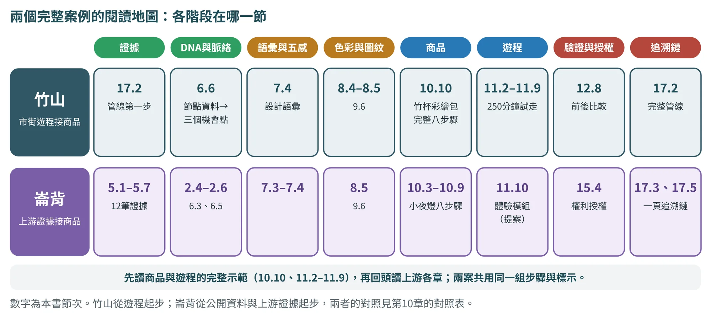
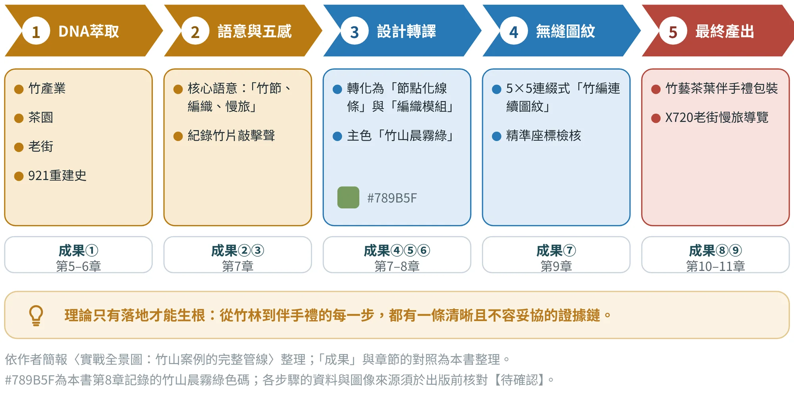
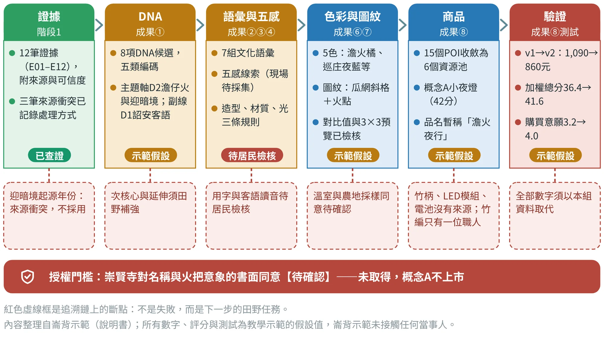
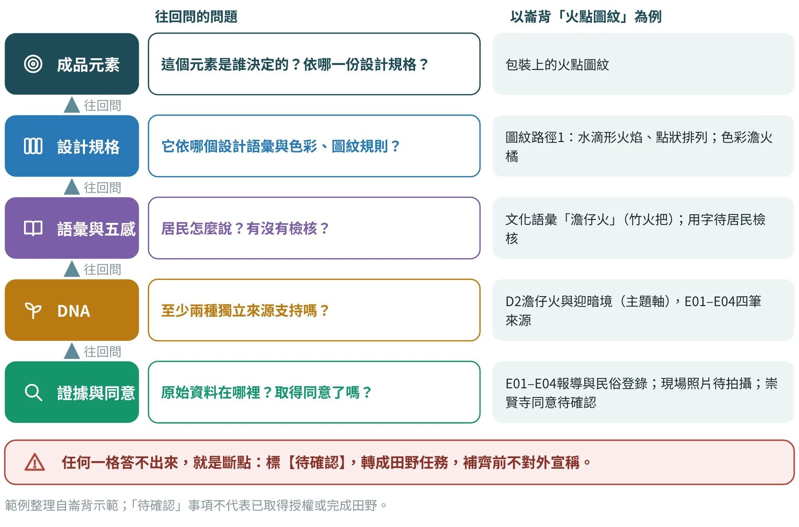
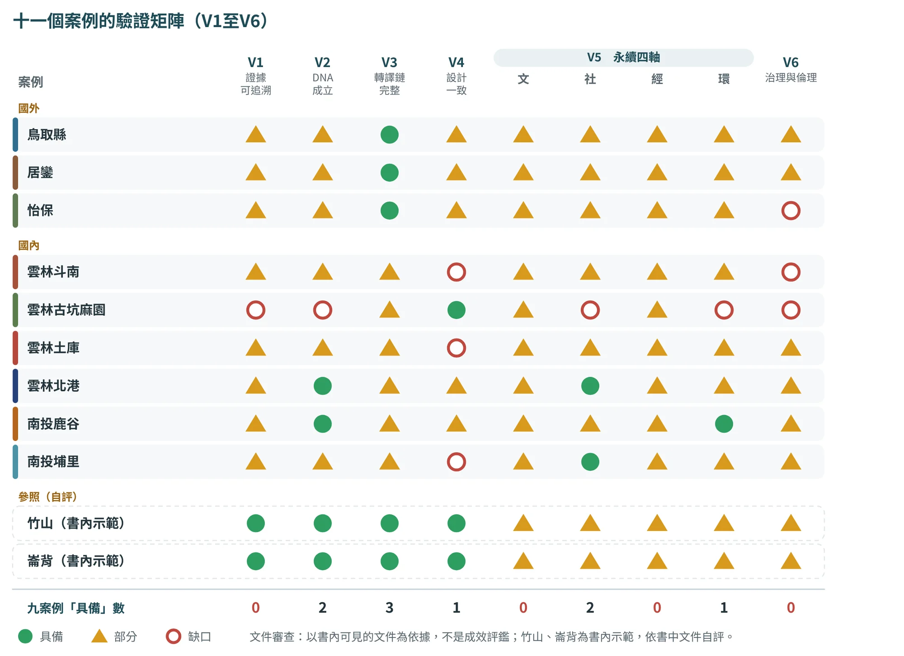

完整案例：一條可追溯的轉譯鏈
把前面十六章串成一條線：從田野證據一路追到商品，每一步都說得出來源

17.1為什麼需要一條追溯鏈#
前面幾章分別介紹了證據、DNA、語彙、色彩、圖紋、商品、遊程、驗證，以及AI協作與品質倫理。每一章都在回答一個局部的問題；真正讓成果站得住腳的，是這些局部之間的連線：商品上的這個圖紋，來自哪個語彙？那個語彙，是居民說的，還是我們想像的？它背後的DNA，有幾種獨立來源？
作者在簡報的結尾提醒：理論只有落地才能生根，從竹林到伴手禮的每一步，都擁有一條清晰且不容妥協的證據鏈。本章用兩個案例，示範這條鏈長什麼樣子，並提供一套可以直接使用的工具。
兩個完整案例，各自從哪裡開始
本書的兩個完整案例，起點不同，走的卻是同一條鏈。竹山從遊程試走開始：一句「很想帶回家繼續畫」變成商品任務，商品改版又回頭補強遊程（10.10、11.10與本章17.2）。崙背從公開資料與上游證據開始：12筆證據、8項候選DNA與一組文化語意，一路走到小夜燈；遊程只是後續的研究提案（10.3至10.9、11.10與本章17.3）。圖17.1把各階段所在的節次放在同一張地圖上，方便依需要跳讀。

兩個案例的性質也不同，閱讀時要分清楚。崙背的位置、活動與統計，依公開報導與官方公告整理，並列出來源；竹山示範的店家合作、報價、規格與測試，則是為了說明方法而設定的內容。凡是標示示範假設的分數、價格、同意與測試結果，都不是實際取得的資料；正式作業要以本組的田野與測試取代。
17.2竹山：作者的完整管線#
圖17.2是作者簡報中的「實戰全景圖」，把竹山案例從DNA到最終產出分成五步。對照本書，五步剛好涵蓋九項成果：第一步對應成果1，第二步對應成果2、3，第三步對應成果4、5、6，第四步是成果7，第五步則是成果8與9。

竹山的兩個最終產出，不是各做各的。第10章與第11章已經示範：遊程試走留下的證據，成為商品概念的起點；商品的改版，又回頭補強遊程的藍圖（表17.1）。這就是追溯鏈的另一個面向：成果與成果之間，也可以互相追溯。
| 轉折 | 證據與結果（示範數字） | 流向 |
|---|---|---|
| 試走 | 兩位旅客在元泰竹藝社沒有把竹杯畫完，說「很想帶回家繼續畫」示範假設 | 成果9→成果8：產生「竹杯彩繪包」商品概念 |
| 概念評分 | 竹杯彩繪包45分，高於竹柄開信刀37分、冬筍禮盒33分 | 成果8：選為深化方案 |
| 定價與測試 | v1建議售價908元，超出800元上限；v2定價790元；加權總分由38.3提高到42.8，購買意願由3.4提高到4.1 | 回到規格與改版（第10、12章） |
| 遊程改版 | 元泰竹藝社停留計畫50分、實測75分；調整後路線評分由24提高到28（滿分35） | 成果9：改版；彩繪包成為「進度落後」的對策 |
數字為第10至12章的教學示範假設值，旅客原話亦為示範而設定，不是實際訪談；正式作業須以本組的試走、報價與測試資料取代。
崙背的追溯總表在17.3節。竹山示範也能做出同樣的一張表（表17.2）：一列一個成品元素，並留下目前能追到哪裡、哪裡仍是缺口。表中凡是需要供貨、同意或授權的項目，在取得當事人的回覆之前，都只能標為待確認。
| 成品元素 | 回溯到 | 證據與同意 | AI協作 | 狀態 |
|---|---|---|---|---|
| 商品任務：承接未完成的手作 | 成果9試走一；D1竹產業與竹工藝 | 元泰竹藝社計畫50分、實測75分；旅客原話為示範設定 | Q8-6 | 示範假設 |
| 材料與工藝：竹杯、手作指導 | 元泰竹藝社（POI）；五種角色矩陣 | 供貨、報價與合作意願未取得；不能由「市街」推論供應能力 | Q8-5 | 缺口：待確認 |
| 圖紋：節點化線條、編織模組 | 成果7；語彙「竹節、編織」（成果3） | 無縫檢核須留檔；採樣來源與使用範圍待確認 | —— | 示範假設，採樣待確認 |
| 色彩：竹山晨霧綠 | 成果6；竹林與晨霧的採樣 | 色碼須現地採樣、印製前校色 | —— | 待確認 |
| 故事卡：竹加工回到日常 | 成果3；POI元泰竹藝社 | 每句附來源編號〔竹2〕〔竹3〕；人物與肖像須取得同意 | P6-2 | 已查證，同意待確認 |
| 定價v2：790元 | BOM與報價（v1：408.50元→v2：356.00元） | 同一公式計算；報價須註明來源與日期；通路分潤30%為假設 | P7-1 | 示範假設 |
| 帶回家完成的包裝 | 服務藍圖對「進度落後」的對策 | 乾燥、攜帶與包裝固定須以實物測試 | Q8-6 | 待確認 |
| 測試：加權38.3→42.8 | 成果8概念與原型測試 | 小樣本；購買意願3.4→4.1不能推論暢銷 | Q8-4 | 示範假設 |
依第10章竹山示範與17.2節整理；AI協作欄為提示詞代碼（全文見附錄B），實際作業須同時記入範本11；所有數字、評分與同意狀態皆非實際取得。
竹山還有一個要分清楚的地方：作者簡報中的實務圖像（例如竹山的地方農產包裝、「來發打鐵」的客製雕刻刀組與五感包巾），是真實完成的設計工作，可以由作者補述真實的委託、過程與結果；第10章的竹杯彩繪包則是為了完整示範流程而做的教學模擬。兩者不能混用：不能把模擬測試的數字，接到實務作品上去宣稱成效。引用時一律標明案例性質。
17.3崙背：從證據到商品的一頁追溯鏈#
崙背示範從公開報導出發，走完證據、DNA、語彙與五感、色彩圖紋、商品與驗證。圖17.3把整條鏈放在一頁：每一欄是一個階段，欄下方的紅色虛線框，是這一段目前的斷點。這張圖有一個重要的用途：它讓人一眼看出，哪裡的證據最紮實，哪裡仍然只是示範。

這條鏈有三個值得注意的地方：
- 證據這一欄標「已查證」，其餘多半標「示範假設」。 地方的位置、活動與統計依公開報導整理並列出來源；但商品概念、評分、價格與測試，是為了說明方法而設定的內容。
- 每一欄都有自己的斷點。 從來源衝突、客語用字、採樣同意，到商品的竹柄、LED模組與電池沒有來源，斷點不是失敗，而是下一步的田野任務。
- 最底下的紅色橫條，是整件商品能否上市的門檻。 崇賢寺對名稱與火把意象的書面同意沒有取得，概念A就不上市（第15章）。
鏈的一頁圖適合報告，但實際作業需要更細的一張表。表17.3是追溯總表的格式，並以崙背的概念A為例：一列一個成品元素，記下回溯、證據與同意、AI協作與狀態。
| 成品元素 | 回溯到 | 證據與同意 | AI協作 | 狀態 |
|---|---|---|---|---|
| 品名「澹火夜行」（暫名） | 成果3語彙「澹仔火」；D2；LB-01 | 〔崙3〕〔崙5〕〔崙7〕；用字待居民檢核；名稱授權待崇賢寺同意 | P6-2 | 待確認 |
| 故事卡（約60字） | 成果3「顧更」「遊庄」；E01–E04 | 每句附來源編號；不寫起源年份 | P6-2、W7 | 已查證，用字待確認 |
| 色彩：澹火橘等5色 | 成果6；火光、夜色、竹篾、瓜網、鮮乳 | 對比值已計算；色碼待現地採樣替換 | Q6 | 示範假設 |
| 圖紋：瓜網斜格＋火點 | 成果7；路徑1火點（LB-01、LB-12）、路徑2瓜網（LB-05） | 抽象化過程已記錄；溫室與農地採樣同意待確認；3×3預覽 | Q7、P6-3 | 示範假設，採樣待確認 |
| 竹編燈罩 | LB-03竹編藝師；D2 | 產能、單價、姓名與作品使用同意待確認；只有一位職人 | —— | 缺口：無備援 |
| 竹柄、LED模組、電池 | 無入選POI | 沒有來源；電氣安全與標示待確認 | —— | 缺口：無來源 |
| 定價v2：860元 | 成本試算（BOM與報價） | 同一公式計算；報價須註明來源與日期 | P7-1 | 示範假設 |
依崙背示範說明書的追溯鏈、CMF與待確認事項整理；AI協作欄為對應的提示詞代碼（全文見附錄B），實際作業須同時記入範本11；所有數字、評分與同意狀態皆非實際取得。
做自己的追溯總表時，有三個小技巧：一，成品元素寫得越細越好，「包裝」太粗，「包裝上的火點圖紋」才能追；二，「證據與同意」欄一定要有編號或文件名，不能只寫「已確認」；三，狀態只用三種標示：已查證示範假設或正式作業中的「已確認」，以及待確認，不要自創第四種。
崙背小夜燈能否放行，在第10章用「文化、技術、營運」三道閘門整理（圖10.13）；放行之後的下一步，是11.10節說明的體驗模組提案，同樣標明為研究提案，未實施。
17.4反向審查：從成品追回證據#
追溯鏈是由上游往下游做的；但檢查的時候，要反過來：從成品上抽一個元素，往回問五個問題（圖17.4）。任何一格答不出來，就是斷點。

反向審查最好在第三道關卡（設計定稿前，見第15章）進行，由小組以外的人擔任審查者，例如另一組同學、指導老師或居民。審查者隨機抽三到五個成品元素，請小組逐一回答；答不出來的，記在斷點清單，補齊前不對外宣稱。可以請AI協助檢查追溯總表，但它只能指出斷點，不能補寫來源，也不能判定是否已取得授權：
以下是我們的追溯總表：【貼上：成品元素｜回溯到的成果、DNA與POI｜證據與同意｜AI協作紀錄｜狀態】。請逐列檢查：①這個元素是否連回至少一個入選POI與一項DNA；②證據欄是否附有來源編號或文件名；③需要同意或授權的項目，是否有同意紀錄（只依我提供的資料判斷，沒有紀錄者標「待確認」）；④AI協作欄是否有提示詞代碼。每列輸出「連得上／部分連得上／斷點」，並寫出缺少的資料與建議的田野問題。不要補寫來源，不要替我判定是否已取得授權。
W11為本書補充的提示詞，原則與P0相同：只依提供的資料、未知標待確認、判斷留給人。
17.5把斷點變成田野任務#
斷點找出來之後，下一步是把它變成可以執行的任務：要問誰、問什麼、屬於哪一類POI。表17.4是崙背示範列出的五個資源缺口，它們只列問題與類型，不替業者填答案；答案必須由當事人回覆。
| 缺口 | 要補什麼 | 田野可以問的問題 | POI類型 |
|---|---|---|---|
| 材料：竹材來源 | 竹材由誰供應、什麼竹種、產地、可否追溯 | 「燈罩與竹柄用的竹子從哪裡來？一次拿得到多少？」 | B產業與市集 |
| 工藝：第二位職人 | 能承接竹編小件的職人或工坊，作為備援 | 「除了您，還有誰做竹編？可以接小量訂製嗎？」 | C工藝與技藝 |
| 材料：LED模組與電池 | 電子零件的供應、檢驗與標示 | 「這類零件誰能供貨？需要哪些檢驗與標示？」 | H服務與物流 |
| 視覺：採樣來源 | 把瓜網紋與農地方格升為正式採樣POI，或另找來源 | 「可以到溫室、農地拍攝嗎？有什麼限制？」 | B、F |
| 包材與印刷 | 盒型、單色印刷、刀模與交期 | 「最小印量與交期是多少？」 | H服務與物流 |
取自崙背示範說明書「覆蓋檢查與資源缺口」；POI類型代碼依該說明書的POI分類。
排任務的優先順序，建議用兩個原則：授權類先於供應類，因為授權拿不到，後面的供應與打樣都白做（崇賢寺的書面同意就是這種情況）；會改變設計方向的先於只影響細節的，例如竹材來源會影響材質選擇，而包材交期只影響打樣時程。
完成田野任務之後，不要只更新一個欄位。回頭檢查：這筆新證據，會不會改變DNA的層級？會不會讓某個語彙需要重新檢核？會不會改寫成品元素的規格？這就是第12章的「回流規則」在追溯鏈上的樣子：證據一動，下游跟著動。
17.6同一把尺：十一個案例的驗證卡#
前五節走完了竹山與崙背兩個完整案例。本節把3.3版新增的九個案例，用同一把尺再量一次（3.6節的六道驗證）。每個案例先放一張地方DNA的四道檢驗表，再放一張驗證卡；最後把九張卡收成一張矩陣，並把竹山與崙背放進同一張圖當參照列（圖17.5）。
怎麼讀這些卡
- 評等是桌面審查。 ●具備、△部分、○缺口，只說明「現有文件能不能支撐這一道」。作者沒有到這九個地方做田野，所以不是成效評鑑，也不是對實踐者的批評。其中斗南與古坑是作者自己的文件與設計稿，你若提供田野紀錄，評等可以升級。
- 竹山與崙背是參照列。 它們是本書自己走完的流程，V1至V4依第17章的追溯鏈自評為具備，V5與V6仍是示範假設，沒有現場驗證，所以都列△。請不要把它們的●和外部案例的●放在同一個意義上比較；它們只是讓你看到，做完整條鏈的人自己打分，也應該被別人拿同一把尺量一次。
- 先看矩陣，再看卡。 先在矩陣上找缺口最多的欄，再回到那個案例的驗證卡，找「缺口」欄裡寫的下一步；下一步都能轉成田野任務（17.5節）。

把九個案例的九欄逐欄加總（表17.5），可以看到幾個一致的圖像。最常見的是△部分：九個案例共81格，具備9格、部分62格、缺口10格。鏈條完整不等於證據完整：三個國外案例V3是●，V1與V2卻只有△。設計精確不等於有證據：古坑V4是●，V1、V2與V6都是○。單點扎實：北港與埔里的社會參與、鹿谷的環境永續，各有一格具備。治理與倫理最薄：V6沒有一個●，另有三個○。
| 驗證項目 | ● | △ | ○ | 九個案例的讀法 |
|---|---|---|---|---|
| V1 證據可追溯 | 0 | 8 | 1 | 沒有一個案例的主要事實有第三方或官方來源，並且把目標與成果分開；最常見的是單一來源，或只有作者自己的文件。 |
| V2 DNA成立 | 2 | 6 | 1 | 只有北港（朝天宮與迓媽祖）與鹿谷（凍頂烏龍茶）有兩條以上獨立路徑；古坑的DNA證據在設計稿中缺席。 |
| V3 轉譯鏈完整 | 3 | 6 | 0 | 三個國外案例的鏈條最完整，因為簡報本來就是照DNA→魅力→設計的順序寫的；國內案例多半在中段斷開。 |
| V4 設計一致 | 1 | 5 | 3 | 只有古坑有色碼與圖紋規格；斗南、土庫、埔里沒有共同語彙。 |
| V5 文化適切 | 0 | 9 | 0 | 九個案例全是部分：都談到文化價值，卻沒有知識持有者審訂的紀錄。 |
| V5 社會參與 | 2 | 6 | 1 | 北港（返鄉青年旅人市集）與埔里（桃米社區）有紀錄；古坑文件未見居民參與。 |
| V5 經濟可行 | 0 | 9 | 0 | 九個案例全是部分：有商品、市集或KPI，缺成本、收支與營運分工。 |
| V5 環境永續 | 1 | 7 | 1 | 只有鹿谷的窯火再生有量測資料；其他多是意圖，古坑的文件未談材料與回收。 |
| V6 治理與倫理 | 0 | 6 | 3 | 沒有一個案例具備；怡保、斗南、古坑三個○，涉及遺產站房、廊帶維運與紋樣授權。 |
依本書桌面審查整理；共九個案例，每案九格。竹山與崙背為書內示範，不計入。
案例一 鳥取縣（命名與品牌型）
資料基礎 作者簡報＋縣政府公開資料。轉譯路徑 命名與品牌型（3.4節）。核心本質句（教學示範） 鳥取是以千代川搬運的砂與海風堆成的砂丘為地景根基、並因水木茂出身於境港而把「看不見的存在」變成地方公共敘事的縣。
| DNA候選項（類別．層級） | 四道檢驗 成因 關係 不可替代 可轉譯 | 證據路徑 | 判讀與界線 |
|---|---|---|---|
鳥取砂丘 自然．核心 | ✔✔✔✔ | 縣政府資料、地質公園與百科、作者簡報 | 日本最大砂丘；砂由千代川搬運、經風力堆積；2009年條例禁止在砂丘上畫字或留下記號〔鳥5〕 |
水木茂與妖怪文化 文化．核心（主題軸） | ✔✔✔✔ | 縣政府「漫畫王國」頁、境港資料、作者簡報 | 水木茂成長於境港；水木茂之路有百座以上妖怪銅像〔鳥5〕；使用作品要處理版權 |
松葉蟹、二十世紀梨、鳥取和牛 產業．次核心 | ✔✔△✔ | 縣政府特產資料、作者簡報 | 同類物產在其他縣也有，不可替代偏弱〔鳥4〕 |
因州和紙、弓濱絣與倉吉絣 文化．次核心 | ✔✔△✔ | 縣政府傳統工藝資料 | 因州和紙千年以上、絣織250年以上〔鳥4〕；工藝本身可轉譯，但需傳承人參與 |
星空（「星取縣」） 自然．次核心 | △✔△✔ | 縣政府「星取県」宣傳資料 | 官方稱在環境省「全國星空繼續觀察」以可見度居全國第一〔鳥2〕；調查年份未載待確認 |
慢生活與幸福度高 社會．延伸（待補強） | ？△？△ | 只見於簡報敘述 | 沒有出處；只通過「可轉譯」，更像價值主張而不是DNA |
✔通過、△部分、？無法判斷；四道依序為成因、關係、不可替代、可轉譯（2.5節）。依各案例現有文件的桌面審查；來源編號見附錄F.6（〔鳥1〕至〔鳥5〕）。
| 驗證項目 | 評等 | 文件依據與缺口（桌面審查） |
|---|---|---|
| V1 證據可追溯 | △部分 | 依據 砂丘、星空與漫畫王國有縣政府資料〔鳥2〕〔鳥3〕〔鳥4〕與簡報〔鳥1〕互相支持。 缺口 簡報的「幸福度高」無出處；「美山式農村復興」中的美山在京都府，不在鳥取縣；星空第一的調查年份未載；水木茂之路累計人次須查報導原件。 |
| V2 DNA成立 | △部分 | 依據 砂丘與水木茂妖怪文化通過四道檢驗，各有兩條以上獨立路徑。 缺口 簡報把「慢生活與幸福度高」也列為DNA，卻只通過「可轉譯」，列延伸；它撐起價值主張的一角，是需要補證據的一環。松葉蟹與梨和其他縣重疊，不能當唯一主軸。 |
| V3 轉譯鏈完整 | ●具備 | 依據 DNA → 四個魅力主題 → 五類落地，簡報逐欄對應，每個設計項目都指得回一個魅力主題。 缺口 「慢生活」主題指回的DNA本身證據不足（V2），所以「慢生活品牌」這一支要等上游補證據才站得穩。 |
| V4 設計一致 | △部分 | 依據 簡報提出識別系統的來源：砂丘紋理、妖怪插畫、梨子意象。 缺口 未見色碼、圖紋規格與使用規範；妖怪插畫須用原創造形，或取得授權。 |
| V5 文化適切 | △部分 | 妖怪是真實的地方敘事，但作品權利在創作者與出版方。 |
| V5 社會參與 | △部分 | 簡報列青年移居與創業支持，未寫居民如何參與規劃。 |
| V5 經濟可行 | △部分 | 有蟹、梨、和牛與IP觀光的產業基礎，缺成本與營運資料。 |
| V5 環境永續 | △部分 | 低碳旅遊與木造建築是意圖；砂丘有條例管理〔鳥5〕，但簡報未附量測。 |
| V6 治理與倫理 | △部分 | 依據 砂丘條例是「保護性治理」的實例〔鳥5〕。 缺口 簡報未寫妖怪IP的授權架構，也未寫夜間光影對星空保護區的衝突如何處理。 |
合計九格：●具備1、△部分8、○缺口0。V5分文化適切、社會參與、經濟可行與環境永續四格。
下一步 先補「慢生活與幸福度高」的第二條證據，再談慢生活品牌；妖怪造形用原創設計或取得授權；確認星空第一的調查年份與美山的所在地。
這個案例教了什麼 「命名」要有成因：鳥取把「蟹取縣」「星取縣」「漫畫王國」做成品牌，是因為背後有可查的蟹產量、星空觀察與漫畫家出身地；缺的是把「慢生活」也補上證據。
案例二 居鑾（鐵道與路徑型）
資料基礎 作者簡報（兩份）＋公開資料。轉譯路徑 鐵道與路徑型（3.5節）。核心本質句（教學示範） 居鑾是一座因1909年鐵道通車而成形的車站城市；車站同時是交通節點、咖啡店的所在，也是居民日常聚集的地方。
| DNA候選項（類別．層級） | 四道檢驗 成因 關係 不可替代 可轉譯 | 證據路徑 | 判讀與界線 |
|---|---|---|---|
居鑾車站與英殖民鐵道 歷史．核心 | ✔✔✔✔ | 百科條目、作者工作坊簡報、作者論壇簡報 | 1909年通車；舊站房被列為遺產建築〔居3〕 |
站內的鐵道咖啡（Kluang Rail Coffee） 產業．次核心 | ✔✔✔✔ | 百科條目、作者簡報（兩條路都是二手） | 2022年獲馬來西亞紀錄大全「最老鐵道咖啡店」〔居3〕；紀錄原件待查 |
以車站為中心向外擴散的城市結構 社會．延伸（待田野） | ✔✔△✔ | 只見於作者簡報 | 單一來源；其他鐵道城鎮也有類似形態 |
跨族群的鐵道社群 社會．延伸（待田野） | △△？△ | 只見於作者簡報 | 簡報兩處列的族群不同：DNA欄為日裔、馬來、華人，魅力欄為馬來、華人、印度，須田野確認〔居1〕 |
自然DNA 自然．缺口 | ？？？？ | 簡報未列 | 五類DNA中自然類是空白，須田野補 |
✔通過、△部分、？無法判斷；四道依序為成因、關係、不可替代、可轉譯（2.5節）。依各案例現有文件的桌面審查；來源編號見附錄F.6（〔居1〕至〔居3〕）。
| 驗證項目 | 評等 | 文件依據與缺口（桌面審查） |
|---|---|---|
| V1 證據可追溯 | △部分 | 依據 車站年份與咖啡紀錄有百科條目〔居3〕，與兩份作者簡報〔居1〕〔居2〕互相對得上。 缺口 跨族群名單前後不一；Rail Coffee的紀錄靠百科轉述，須查馬來西亞紀錄大全原件；設計項目全為構想。 |
| V2 DNA成立 | △部分 | 依據 車站與鐵道通過四道檢驗；咖啡有兩條路，但都是二手。 缺口 五類中自然類空白；「跨族群社群」沒有來源，是田野任務。 |
| V3 轉譯鏈完整 | ●具備 | 依據 五個魅力主題與設計項目逐項對得上：鐵道×生活→廊帶、咖啡×鐵道→聯名杯、跨族群→多語導覽、青年→鐵道節、慢旅→步道。 缺口 「跨族群」主題指回的DNA本身未通過檢驗（V2），是上游要補的一環。 |
| V4 設計一致 | △部分 | 依據 簡報提出「鐵道圖騰」轉商品與包裝的概念。 缺口 未見色票、圖騰規格與使用規範。 |
| V5 文化適切 | △部分 | 跨族群敘事需要各社群共同審訂，簡報尚未寫出。 |
| V5 社會參與 | △部分 | 作者論壇簡報建議「歷史採集、紀錄志工、共創工作坊」〔居2〕，屬建議層級。 |
| V5 經濟可行 | △部分 | 市集與聯名商品是方向，沒有成本與營運安排。 |
| V5 環境永續 | △部分 | 步行與老建築再利用是意圖；論壇建議碳額度抵換〔居2〕，尚無數據。 |
| V6 治理與倫理 | △部分 | 依據 作者論壇簡報建議成立「Rail Heritage Governance Board」（政府、鐵路公司、學界、社區代表）〔居2〕。 缺口 屬建議；遺產站房的管理權責與Rail Coffee的營運關係，簡報未寫。 |
合計九格：●具備1、△部分8、○缺口0。V5分文化適切、社會參與、經濟可行與環境永續四格。
下一步 補「跨族群鐵道社群」與自然DNA的田野證據；查證馬來西亞紀錄大全的原件；把鐵道圖騰寫成色票與使用規範；寫出站房與咖啡店的管理權責。
這個案例教了什麼 鏈條完整不等於證據完整：居鑾的「轉譯鏈」是九個案例中最順的，但最上游的跨族群DNA與自然DNA還是空的。
案例三 怡保（色彩與圖紋型（兼鐵道路徑））
資料基礎 作者簡報＋公開資料。轉譯路徑 色彩與圖紋型（兼鐵道路徑）（3.5節）。核心本質句（教學示範） 怡保是近打谷錫礦的移民財富與喀斯特石灰岩地景共同塑造的城市；火災後重建的老城格網與咖啡店，是這段歷史留在日常裡的樣子。
| DNA候選項（類別．層級） | 四道檢驗 成因 關係 不可替代 可轉譯 | 證據路徑 | 判讀與界線 |
|---|---|---|---|
錫礦史與近打谷 歷史．核心 | ✔✔✔✔ | 百科條目、作者簡報 | 1880年代因錫礦迅速成長；1920至30年代錫業高峰；1970至80年代錫價崩跌〔怡2〕 |
喀斯特石灰岩洞與洞穴寺廟 自然．核心 | ✔✔✔✔ | 百科條目、作者簡報 | 近打谷喀斯特；三寶洞、霹靂洞、極樂洞〔怡2〕；宗教場域，設計要先協商 |
老城格網與怡保車站 歷史．次核心 | ✔✔✔✔ | 百科兩條目、作者簡報 | 1892年大火後重建為格網〔怡2〕；現站房1917年啟用，莫臥兒復興風格，俗稱「怡保泰姬瑪哈陵」〔怡3〕 |
白咖啡 產業．次核心（成因待補） | △✔△✔ | 媒體文章、作者簡報 | 起源說法不一：有海南移民說，也有1937年新源隆說〔怡4〕；「發源地」須謹慎 |
芽菜雞與河粉 社會．延伸 | △✔△✔ | 只見於作者簡報 | 單一來源，缺成因說明 |
錫器工藝 產業．延伸（待田野） | ？△？✔ | 只見於作者簡報 | 未見傳承人與店家資料 |
✔通過、△部分、？無法判斷；四道依序為成因、關係、不可替代、可轉譯（2.5節）。依各案例現有文件的桌面審查；來源編號見附錄F.6（〔怡1〕至〔怡4〕）。
| 驗證項目 | 評等 | 文件依據與缺口（桌面審查） |
|---|---|---|
| V1 證據可追溯 | △部分 | 依據 錫礦與老城年份有百科條目〔怡2〕〔怡3〕，並與簡報〔怡1〕互相對得上。 缺口 白咖啡起源說法不一〔怡4〕；人口、洞穴開放資訊與錫器產業現況都未查。 |
| V2 DNA成立 | △部分 | 依據 錫礦、喀斯特與老城通過四道檢驗；老城與車站有兩條以上獨立路徑。 缺口 白咖啡成因與不可替代都只有部分支持；錫器沒有傳承資料。 |
| V3 轉譯鏈完整 | ●具備 | 依據 三大路線各自回到一組DNA：錫礦×工藝、石灰岩×洞穴、白咖啡×老城；城市色彩三色名各回到一項DNA。 缺口 芽菜雞與河粉沒有進入設計項目；錫器的上游證據薄弱。 |
| V4 設計一致 | △部分 | 依據 簡報有三個色名（Limestone Beige、Heritage Cream、Coffee Brown）與圖騰系統概念。 缺口 只有色名，沒有色碼；未見使用規範。色名須經第8章採樣才算色彩系統。 |
| V5 文化適切 | △部分 | 洞穴寺廟的光影工程涉及宗教場域，簡報未寫協商。 |
| V5 社會參與 | △部分 | 「多元文化之城」需各族群共同審訂敘事，簡報未寫。 |
| V5 經濟可行 | △部分 | 慢旅Pass、市集與限定商品是方向，沒有成本與分工。 |
| V5 環境永續 | △部分 | 咖啡渣循環與步行Old Town是意圖，尚無數據。 |
| V6 治理與倫理 | ○缺口 | 依據 簡報未見遺產站房的管理權責、洞穴寺廟的同意程序與色彩圖騰的使用授權。 缺口 先補一張權責表（誰管、誰同意、誰負責維護），再談光影與節慶。 |
合計九格：●具備1、△部分7、○缺口1。V5分文化適切、社會參與、經濟可行與環境永續四格。
下一步 把「Limestone Beige、Heritage Cream、Coffee Brown」三色名採樣成色碼；補白咖啡起源的第二條來源；先寫一張站房與洞穴寺廟的權責表，再談光影。
這個案例教了什麼 色名不是色票：怡保是九個案例中唯一把「城市色彩」寫進轉譯鏈的，但停在色名；從色名走到色碼，要靠第8章的採樣與命名。
案例四 雲林斗南（鐵道與路徑型（兼循環材料型））
資料基礎 作者簡報與估算文件＋公開資料。轉譯路徑 鐵道與路徑型（兼循環材料型）（3.6節）。核心本質句（教學示範） 斗南（他里霧）是以車站、糖鐵與台鐵倉庫為中心、主要節點都在步行可達距離內的小鎮；碾米、醬油、養鴨、竹筍與戲偶等職人，在這個中心周圍累積了數代的手藝。
| DNA候選項（類別．層級） | 四道檢驗 成因 關係 不可替代 可轉譯 | 證據路徑 | 判讀與界線 |
|---|---|---|---|
他里霧的車站與糖鐵、台鐵倉庫群 歷史．核心 | ✔✔✔✔ | 作者簡報、百科與台鐵資料、媒體報導（三條路） | 1903年12月設站〔斗3〕；台鐵、台糖、台西客運共構；站旁曾有二十多間倉庫〔斗4〕；七號倉庫由舊糖鐵基地轉型〔斗1〕 |
步行可達的小鎮尺度（節點相距約400至950公尺） 社會．延伸（待田野量測） | ✔✔△✔ | 作者估算文件（單一來源） | 距離與廊帶長度1.2至1.5公里是作者估算〔斗2〕，須實地量測 |
農食職人群：碾米、醬油、養鴨、綠竹筍 產業．次核心 | ✔✔△✔ | 五個品牌各自的敘述（品牌自述） | 玉山碾米六十年、新芳園醬油1945年創立、鴨迷四代、阿丹合作社2014年成立〔斗1〕；認證與年份為品牌自述 |
戲偶雕刻（偶的家） 文化．延伸 | ✔✔△✔ | 品牌敘述（徐炎卿家族傳承） | 布袋戲在雲林並非斗南獨有，獨特處在雕刻工藝的家族傳承 |
絲瓜絡與昔日「菜瓜寮」 產業．延伸（待田野） | ✔△△✔ | 單一品牌敘述 | 菜瓜寮產業的規模與消長須查地方志待確認 |
智慧販賣機茶屋（讀讀小茶屋） 產業（新創）．不列DNA | ？△？✔ | 品牌敘述 | 簡報未說明茶與斗南歷史的關係；屬新事業，價值在青創與茶渣循環（16.4） |
✔通過、△部分、？無法判斷；四道依序為成因、關係、不可替代、可轉譯（2.5節）。依各案例現有文件的桌面審查；來源編號見附錄F.6（〔斗1〕至〔斗4〕）。
| 驗證項目 | 評等 | 文件依據與缺口（桌面審查） |
|---|---|---|
| V1 證據可追溯 | △部分 | 依據 車站設站年份有百科條目〔斗3〕，倉庫現況有2014年報導〔斗4〕，與作者簡報〔斗1〕對得上。 缺口 兩份作者文件算同一條路；ISO22000、HACCP、SGS等為品牌自述，未附證書；減碳估算的係數出處未列。 |
| V2 DNA成立 | △部分 | 依據 車站與倉庫群有三條路徑；農食職人群有五個獨立的品牌敘述。 缺口 步行尺度只有作者的距離估算，層級降為延伸；讀讀小茶屋不是DNA，是新事業。 |
| V3 轉譯鏈完整 | △部分 | 依據 糖鐵→倉庫→園區→品牌的廊帶鏈清楚；簡報副標「從鐵軌出發，走進生活的廊帶」可當價值主張。 缺口 簡報沒有寫出魅力主題；品牌群與廊帶如何互相導流，未見說明。 |
| V4 設計一致 | ○缺口 | 依據 文件未見廊帶共用的色彩、圖紋或導引識別；各品牌各有識別。 |
| V5 文化適切 | △部分 | 糖鐵與倉庫保存是文化價值，但居民如何參與詮釋，文件未寫。 |
| V5 社會參與 | △部分 | 七號倉庫的青創平台與技職學生是參與入口，名單與機制未附。 |
| V5 經濟可行 | △部分 | 品牌認證與冷鏈是經濟基礎；廊帶本身的營運收支未見。 |
| V5 環境永續 | △部分 | 估算有框架（情境與係數），但係數出處與量測方法未附，列為示範假設。 |
| V6 治理與倫理 | ○缺口 | 依據 文件未見廊帶的維運分工：台鐵、台糖舊資產、公所、品牌之間誰負責什麼。 |
合計九格：●具備0、△部分7、○缺口2。V5分文化適切、社會參與、經濟可行與環境永續四格。
下一步 先把「糖鐵鏽紅、倉庫灰、稻米白、醬油琥珀」從實物採樣成共同色票；補廊帶的維運分工與分潤表；減碳估算的係數須附出處，現列為示範假設。
這個案例教了什麼 廊帶有路徑、有品牌，缺的是共同的「識別」與「治理」；減碳估算是好的起點，但要把假設寫成假設。
案例五 雲林古坑麻園（色彩與圖紋型）
資料基礎 作者設計說明卡與設計稿＋公開資料（沒有田野紀錄）。轉譯路徑 色彩與圖紋型（3.6節）。核心本質句（教學示範） 古坑以日治時期荷包山一帶的咖啡栽培聞名〔古3〕；麻園的核心本質句要待田野證據之後才能寫，現有設計說明卡只能寫到「稻、地瓜、菸樓、麻竹與山嵐構成的山田地景」。
| DNA候選項（類別．層級） | 四道檢驗 成因 關係 不可替代 可轉譯 | 證據路徑 | 判讀與界線 |
|---|---|---|---|
日治時期的咖啡栽培與921後的轉型 歷史．次核心（鄉的尺度，待第三條路） | ✔✔✔✔ | 農業部網頁、維基百科 | 約1934年起日人在大尖山、荷苞山試種，後來荒廢；921後華山居民以咖啡為產業重心〔古3〕；設計稿沒有使用 |
菸樓與田疇 歷史．延伸（待田野） | ？✔△✔ | 設計說明卡的色名與紋樣 | 菸樓與古坑菸葉栽培的關係，文件未載 |
稻作與地瓜 產業．延伸 | ？✔△✔ | 設計說明卡 | 稻與地瓜台灣各地都有，須找到麻園特有的品種、季節或做法 |
麻竹與「麻園」地名 自然．延伸 | ？△？✔ | 設計說明卡的色名與品牌名 | 地名與麻或麻竹的關係須查地方志待確認 |
山嵐雲霧與水流 自然．延伸（通用元素風險） | ？✔？✔ | 設計說明卡 | 多數山村都有；須轉成麻園特有的地點、視線或時刻 |
✔通過、△部分、？無法判斷；四道依序為成因、關係、不可替代、可轉譯（2.5節）。依各案例現有文件的桌面審查；來源編號見附錄F.6（〔古1〕至〔古3〕）。
| 驗證項目 | 評等 | 文件依據與缺口（桌面審查） |
|---|---|---|
| V1 證據可追溯 | ○缺口 | 依據 設計說明卡沒有附田野或文獻來源；公開資料只能確認古坑的咖啡史〔古3〕〔古2〕。 缺口 補一份麻園的證據矩陣：每個母題各兩條獨立來源。 |
| V2 DNA成立 | ○缺口 | 依據 麻園各母題的「成因」欄都沒有資料；唯一通過四道檢驗的是咖啡（鄉的尺度，兩條路徑〔古2〕〔古3〕），但設計稿沒有使用。 缺口 稻、地瓜、山嵐與水流屬通用元素，通不過「不可替代」。若麻園的核心不是咖啡，須在核心本質句寫明範圍（鄉或麻園）。本案只收到設計說明卡與設計稿，補田野紀錄後可改評。 |
| V3 轉譯鏈完整 | △部分 | 依據 五感→六組母題→五套紋樣→九色→包裝紙與手提袋，這段下游鏈條完整可追溯。 缺口 上游缺：DNA證據→五感；魅力主題與價值主張未見。 |
| V4 設計一致 | ●具備 | 依據 九色有名稱與HEX；五套紋樣有排列方式（散點、連綴、重疊）、單位1200×1200、基準格100、半格位移比對誤差不超過4/255；應用有尺寸。 缺口 使用規範（誰可用、怎麼用）不屬視覺系統，歸在V6。 |
| V5 文化適切 | △部分 | 母題取自地景，但未見居民或知識持有者審訂的紀錄。 |
| V5 社會參與 | ○缺口 | 文件未見居民參與設計的紀錄。 |
| V5 經濟可行 | △部分 | 包裝紙與手提袋是商品載體，沒有成本與通路。 |
| V5 環境永續 | ○缺口 | 文件未談紙材、印刷與回收。 |
| V6 治理與倫理 | ○缺口 | 依據 文件未見紋樣的使用範圍、授權與署名。 缺口 依9.7節補一份識別使用規範，尤其是「九色只有第五套用滿」這類規則要寫成條文。 |
合計九格：●具備1、△部分3、○缺口5。V5分文化適切、社會參與、經濟可行與環境永續四格。
下一步 先補麻園的田野證據矩陣（每個母題各兩條獨立來源），再改寫核心本質句；依9.7節補識別使用規範與署名；其餘三軸待居民參與、紙材與回收資料。
這個案例教了什麼 古坑是「設計層最完整、證據層最空」的案例：它示範了第8、9章可以做到多精確，也提醒好看的系統若缺DNA證據，就可能只是漂亮的元素擷取。
案例六 雲林土庫（沉浸體驗型（兼命名與品牌型））
資料基礎 縣府與鎮公所提案書＋作者簡報＋公開資料。轉譯路徑 沉浸體驗型（兼命名與品牌型）（3.6節）。核心本質句（教學示範） 土庫是北港進香路上的中繼城鎮：香客在此歇腳吃買，順天宮與六房媽的輪祀把聚落連成一圈，糖鐵與油醬產業則是這個商旅小鎮留下的生計。
| DNA候選項（類別．層級） | 四道檢驗 成因 關係 不可替代 可轉譯 | 證據路徑 | 判讀與界線 |
|---|---|---|---|
順天宮與六房媽聚落文化圈（土庫股） 文化．核心 | ✔✔✔✔ | 提案書、作者簡報、媒體報導 | 提案載「六房媽聚落文化圈—土庫股」；順天宮現今規模始建於1834年〔土3〕 |
北港進香路上的中繼城鎮 歷史．核心 | ✔✔✔✔ | 提案書、媒體報導 | 俗諺「北港顯，土庫定」與「來去土庫吃買」；提案稱早期鹿港至北港的交通要塞〔土1〕〔土3〕 |
糖鐵與車站記憶 歷史．延伸 | ✔✔△✔ | 提案書（單一來源） | 舊台糖原料線；雲林的糖鐵不只土庫有 |
醬油、食用油、蜂蜜等加工 產業．延伸 | ✔✔△✔ | 提案書（單一來源） | 源順油廠為觀光工廠；加工業各鄉鎮都有，須找出土庫特有的做法 |
有機可可（土庫驛農場） 產業（新事業）．不列DNA | ？△？✔ | 提案書 | 與土庫的歷史、產業或信仰沒有可說明的關係；糖業記憶與甜食工藝的連結只是可檢驗的假說待確認 |
✔通過、△部分、？無法判斷；四道依序為成因、關係、不可替代、可轉譯（2.5節）。依各案例現有文件的桌面審查；來源編號見附錄F.6（〔土1〕至〔土3〕）。
| 驗證項目 | 評等 | 文件依據與缺口（桌面審查） |
|---|---|---|
| V1 證據可追溯 | △部分 | 依據 提案書是官方文件，數字清楚標示為目標；順天宮、第一市場與諺語另有媒體報導〔土3〕。 缺口 提案書只有一份；營業額、留宿人次與就業目標都是目標，不是成果；光雕案是否演出，簡報未載。 |
| V2 DNA成立 | △部分 | 依據 順天宮與北港進香中繼各有兩條以上路徑，通過四道檢驗。 缺口 有機可可通不過「成因」與「不可替代」；糖鐵、油醬加工只有單一來源。 |
| V3 轉譯鏈完整 | △部分 | 依據 三條廊道（外環糖鐵、大同路、中山路）回到糖鐵與老街DNA；光雕回到辦桌迎媽祖。 缺口 旅店與可可沒有上游DNA的理由，是斷點；「進香中繼」這個最強的DNA沒有成為主軸。 |
| V4 設計一致 | ○缺口 | 依據 提案書未見色彩、圖紋或識別規格；光雕的視覺設計只在簡報出現。 缺口 從順天宮、第一市場、糖鐵與油醬取色，先做一張色票（第8章）。 |
| V5 文化適切 | △部分 | 光雕涉及宗教場域，需要廟方與信眾的同意；提案書與簡報未載。 |
| V5 社會參與 | △部分 | 提案以青農、契作與青年為對象（青年300人為目標），未寫居民如何共同決策。 |
| V5 經濟可行 | △部分 | 經費、KPI與營運規模最完整；但推算須檢驗（見下方數字檢查）。 |
| V5 環境永續 | △部分 | 有機與友善耕作50公頃為目標；未見量測。 |
| V6 治理與倫理 | △部分 | 依據 縣府與鎮公所為提案單位，並有街區產業平台的構想。 缺口 宗教場域、旅店營運與契作的權責與授權未見（第15章）。 |
合計九格：●具備0、△部分8、○缺口1。V5分文化適切、社會參與、經濟可行與環境永續四格。
下一步 把「進香中繼」變成主軸；為旅店、可可與光雕補上DNA理由或改列為新事業；先查證光雕是否演出；廟方與信眾的同意程序要先寫成文件。
這個案例教了什麼 土庫示範兩件事：一是最強的DNA（進香中繼）可能被最大的投資（旅店與可可）繞過；二是提案的目標，要用算術檢查它的假設。
案例七 雲林北港（沉浸體驗型（兼命名與品牌型））
資料基礎 鎮公所提案簡報＋公開資料。轉譯路徑 沉浸體驗型（兼命名與品牌型）（3.6節）。核心本質句（教學示範） 北港（舊稱笨港）是以朝天宮媽祖信仰與每年迓媽祖繞境聚起人潮的信仰之城；信仰的人潮如何接上日常的商業生活，是它的轉譯課題。
| DNA候選項（類別．層級） | 四道檢驗 成因 關係 不可替代 可轉譯 | 證據路徑 | 判讀與界線 |
|---|---|---|---|
朝天宮媽祖信仰與迓媽祖繞境 文化．核心 | ✔✔✔✔ | 提案簡報、媒體報導、廟宇資料 | 朝天宮創建於1694年（康熙33年）〔北2〕；提案載迓媽祖為農曆三月十九至二十，並有百年藝閣〔北1〕 |
笨港舊址與水道頭（日治自來水廠） 歷史．延伸 | ✔✔△✔ | 提案簡報（單一來源） | 提案載水道頭為日治自來水廠，1997年停用；古笨港遺址 |
牛墟 社會．延伸 | △✔△✔ | 提案簡報（單一來源） | 提案稱為全台最大之一，須查市集統計待確認 |
花生、麻油、大餅等傳統食物 產業．延伸 | ✔✔△✔ | 提案簡報（單一來源） | 食物產地與做法的獨特處須田野補充 |
宏昇芽菜與豆菜庄 產業．延伸（瀕危，保存優先） | ✔✔△✔ | 提案簡報（單一來源） | 1950年代起；提案稱昔日過半百戶種芽菜、如今僅剩3戶；「全台唯一國產大豆芽菜」是最高級說法，須查證待確認 |
✔通過、△部分、？無法判斷；四道依序為成因、關係、不可替代、可轉譯（2.5節）。依各案例現有文件的桌面審查；來源編號見附錄F.6（〔北1〕至〔北2〕）。
| 驗證項目 | 評等 | 文件依據與缺口（桌面審查） |
|---|---|---|
| V1 證據可追溯 | △部分 | 依據 朝天宮創建年份有媒體報導〔北2〕，迓媽祖與光影節見提案簡報〔北1〕。 缺口 同一份簡報出現38,437與28,870兩種人口數字，口徑待核；牛墟、芽菜「全台唯一」須查證。 |
| V2 DNA成立 | ●具備 | 依據 朝天宮媽祖信仰與迓媽祖通過四道檢驗，且有提案、媒體與廟宇資料三條路。 缺口 芽菜是瀕危產業DNA：值得「保存」優先於「轉譯」（2.4節）。 |
| V3 轉譯鏈完整 | △部分 | 依據 「香客轉遊客」→旅人市集、老街店家與光影節，鏈條清楚。 缺口 芽菜的資金（貸款）不是轉譯；牛墟與花生、大餅尚未進入設計項目。 |
| V4 設計一致 | △部分 | 依據 「光」是光影節的共同語彙，與朝天宮建築直接相關。 缺口 光的語彙沒有延伸到市集、商品與老街識別；未見色碼與使用規範。 |
| V5 文化適切 | △部分 | 光影節與朝天宮合作；神像與繞境影像的使用界線，未見說明。 |
| V5 社會參與 | ●具備 | 返鄉青年團隊營運旅人市集並獲獎，是有紀錄的社會參與。 |
| V5 經濟可行 | △部分 | 老街店家與市集有營運基礎；提案經費與貸款屬目標。 |
| V5 環境永續 | △部分 | 光影節以節能照明為訴求；缺用電與人流的量測。 |
| V6 治理與倫理 | △部分 | 依據 朝天宮為宗教管理主體，光影節以合作方式舉辦。 缺口 宗教影像授權、旅人市集的場地使用與分潤，文件未見（第15章）。 |
合計九格：●具備2、△部分7、○缺口0。V5分文化適切、社會參與、經濟可行與環境永續四格。
下一步 核對人口數字口徑（38,437與28,870）；芽菜以「保存」優先於「商品化」；把光的語彙延伸到市集、商品與老街；寫出宗教影像授權與市集分潤。
這個案例教了什麼 北港示範「從宗教人潮到日常消費」的轉譯題目；它也提醒：一個瀕危的產業DNA（豆菜庄僅剩3戶），不一定要變成商品，可能要先被保存。
案例八 南投鹿谷（工藝與商品型（兼循環材料型））
資料基礎 三份提案文件（2021、2022、2026）。轉譯路徑 工藝與商品型（兼循環材料型）（3.6節）。核心本質句（教學示範） 鹿谷是林鳳池自武夷山帶回軟枝烏龍茶種而成就凍頂烏龍的茶鄉；茶、竹、米、筍在三面環山的紅壤台地與沖積土上長成。
| DNA候選項（類別．層級） | 四道檢驗 成因 關係 不可替代 可轉譯 | 證據路徑 | 判讀與界線 |
|---|---|---|---|
凍頂烏龍茶 產業．核心 | ✔✔✔✔ | 三份提案、茶席文化館提案的史料敘述 | 道光11年（約1831）林鳳池自福建武夷山帶回軟枝烏龍；大水堀台地紅壤適茶園〔鹿2〕 |
竹、筍與瑞田米 產業．延伸（與竹山重疊） | ✔✔△✔ | 2021年提案 | 竹與筍在鄰近的竹山更為知名，不可替代性有限；可與竹山共享區域色彩（第10章） |
八通關古道與開拓史 歷史．延伸 | ✔✔△✔ | 提案 | 1875年開闢，國定古蹟；與茶的關係須說明 |
麒麟潭與水資源 自然．問題線索 | ✔✔△△ | 提案 | 約180年前築壩蓄水；優養化嚴重〔鹿2〕；是永續轉譯的問題，不是魅力主軸 |
陶藝與陶瓷廢料 產業（循環）．可轉化物，不列DNA | △✔？✔ | 2026年窯火再生提案 | 問題與數據來自陶藝家田調與前期成果〔鹿3〕；是第16章的「可轉化物」 |
✔通過、△部分、？無法判斷；四道依序為成因、關係、不可替代、可轉譯（2.5節）。依各案例現有文件的桌面審查；來源編號見附錄F.6（〔鹿1〕至〔鹿3〕）。
| 驗證項目 | 評等 | 文件依據與缺口（桌面審查） |
|---|---|---|
| V1 證據可追溯 | △部分 | 依據 三份提案跨2021至2026年，歷史事實與KPI算術互相對得上（4,165×300≈125萬、7,000×500＝350萬）。 缺口 茶園面積同一份文件有1,700與實查675.5公頃兩種口徑；全是提案文件，沒有第三方查核；SIIR案未通過。 |
| V2 DNA成立 | ●具備 | 依據 凍頂烏龍茶通過四道檢驗，有史料、土壤、品牌與提案多條路。 缺口 竹與筍和竹山重疊，列延伸；陶瓷廢料是可轉化物，不是DNA。 |
| V3 轉譯鏈完整 | △部分 | 依據 茶→五感茶席→一日茶師與茶山輕旅行，鏈條清楚。 缺口 田園風箏節、茶咖智販機與茶DNA的關係未說明；窯火再生接的是永續問題，不是茶。 |
| V4 設計一致 | △部分 | 依據 茶席文化館以五感傳遞茶DNA；凍頂茶LOGO以比賽徵集。 缺口 未見茶色、茶具造形與圖紋的共同語彙，LOGO徵集不等於視覺系統。 |
| V5 文化適切 | △部分 | 茶席文化教育是文化價值；茶師與茶農是否參與審訂，未載。 |
| V5 社會參與 | △部分 | 營運委外協會；茶農與居民參與機制未見。 |
| V5 經濟可行 | △部分 | KPI算術一致，但SIIR未通過，營運資金仍屬目標。 |
| V5 環境永續 | ●具備 | 窯火再生有量測資料：191道配方、1:2比例、成分SiO₂ 66.2%（日本26號瓷土67.5%）；已知>100克成形性下降。 |
| V6 治理與倫理 | △部分 | 依據 茶席文化館由大華嚴寺管理、委外營運，角色清楚。 缺口 茶具、LOGO與配方資料的授權與公開程度未見（第15章）。 |
合計九格：●具備2、△部分7、○缺口0。V5分文化適切、社會參與、經濟可行與環境永續四格。
下一步 統一茶園面積的口徑（1,700公頃與實查675.5公頃）；把茶色與茶具造形寫成共同語彙，而不只是LOGO徵集；寫出茶具與配方的授權與公開程度。
這個案例教了什麼 鹿谷最適合示範「茶是DNA、陶瓷廢料是可轉化物」：兩者不在同一條鏈上，卻可以在同一個永續框架裡互相補充。
案例九 南投埔里（循環材料型（兼工藝與商品型））
資料基礎 公開網路資料（含廣編稿）；沒有作者或提案文件。轉譯路徑 循環材料型（兼工藝與商品型）（3.6節）。核心本質句（教學示範） 埔里是群山環抱的盆地，盆地的水讓酒、紙與桃米的生態各自長成不同的產業與社區行動。（教學示範；水質證據待補）
| DNA候選項（類別．層級） | 四道檢驗 成因 關係 不可替代 可轉譯 | 證據路徑 | 判讀與界線 |
|---|---|---|---|
「水」：酒、紙、生態三條線索 自然．核心候選（待水質證據） | ✔✔△✔ | 酒廠、紙寮、桃米三條獨立線索，但都是業者或媒體敘事 | 酒廠以愛蘭泉水為訴求〔埔2〕；紙寮稱水質適合造紙〔埔3〕；桃米以生態與濕地為本〔埔4〕；缺水文與水質資料 |
紹興酒（埔里酒廠） 產業．次核心 | ✔✔△✔ | 媒體報導（兩條以上） | 台灣紹興酒生產中心；1980年代市占居冠〔埔2〕；紹興酒也非埔里獨有 |
手工紙（廣興紙寮） 工藝．次核心（瀕危） | ✔✔△✔ | 媒體報導（兩條以上） | 機械造紙普及後，埔里手工造紙漸式微；以茭白筍殼等在地材料研發手工紙〔埔3〕 |
桃米社區的重建與生態村 社會．核心 | ✔✔✔✔ | 媒體報導、學術與政策資料 | 921後暨南大學、基金會與居民合作，經18年；培養24位生態講解員〔埔4〕 |
紙教堂（外來遷建物件） 文化．不列在地DNA | ？△✔△ | 媒體報導 | 1995年神戶建築、後遷至埔里；與埔里自身歷史的關係是「遷建」，連結說法須查證待確認〔埔5〕 |
✔通過、△部分、？無法判斷；四道依序為成因、關係、不可替代、可轉譯（2.5節）。依各案例現有文件的桌面審查；來源編號見附錄F.6（〔埔1〕至〔埔5〕）。
| 驗證項目 | 評等 | 文件依據與缺口（桌面審查） |
|---|---|---|
| V1 證據可追溯 | △部分 | 依據 三條線索各有不同的來源：酒廠〔埔2〕、紙寮〔埔3〕、桃米〔埔4〕。 缺口 來源以媒體與廣編稿為主；水質、手工紙廠數量與酒廠年份須查官方資料。 |
| V2 DNA成立 | △部分 | 依據 桃米的社區重建通過四道檢驗；「水」有三條路徑。 缺口 三條路徑都是業者或媒體敘事，缺水文與水質證據，「獨立」只在來源，不在事實；紙教堂不列在地DNA。 |
| V3 轉譯鏈完整 | △部分 | 依據 各實踐者各有清楚的轉譯：水→紙→觀光工廠與新材料；水→酒→參訪；生態→社區→導覽。 缺口 沒有一個整體的魅力主題，三條鏈各自為政；本書補的魅力主題是示範假設。 |
| V4 設計一致 | ○缺口 | 依據 三處各有各的識別，文件未見共享的色彩、圖紋或導引。 缺口 示範：以水色、紙白、酒琥珀、蛙綠建一張共同色票（第8章）。 |
| V5 文化適切 | △部分 | 紙教堂是外來物件；埔里開墾史的敘事視角，應有原住民族與平埔族群參與（第15章）。 |
| V5 社會參與 | ●具備 | 桃米是社區自主與跨域合作，並培養24位生態講解員〔埔4〕。 |
| V5 經濟可行 | △部分 | 紙廠剩下少數、觀光工廠轉型；收支資料未見。 |
| V5 環境永續 | △部分 | 桃米有生態保育與濕地，茭白筍殼是農業副產物再利用；缺量測。 |
| V6 治理與倫理 | △部分 | 依據 基金會、學界、社區與公部門協力〔埔4〕。 缺口 紙教堂的權利、在地配方與工藝的授權與署名未見。 |
合計九格：●具備1、△部分7、○缺口1。V5分文化適切、社會參與、經濟可行與環境永續四格。
下一步 補水質與水文的證據（官方資料），把「水」從核心候選改為核心或剔除；三條線索要與業者及社區共同檢核；紙教堂列為外來遷建物件，不列在地DNA。
這個案例教了什麼 埔里示範「沒有人替地方寫過轉譯鏈，我們怎麼做？」：先把三條線索並排檢驗，再決定「水」能不能成為DNA，最後才談魅力與設計。
參照列：竹山與崙背為什麼也要被量一次
竹山與崙背是本書自己走完的兩條鏈，V1至V4依本章17.2、17.3節的追溯鏈自評為具備。V5與V6則仍是示範假設：成本、定價與測試對象都是教學設定，授權與同意都是待確認，沒有現場驗證。所以兩案在矩陣裡的永續四格與治理格都是△。這是這套方法的一個誠實之處：它對自己也用同一把尺。